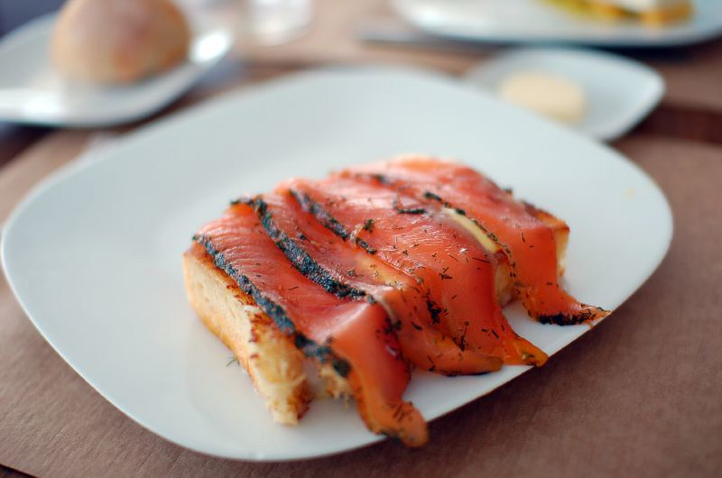

Menacing Gravlax

Gravlax that will strike fear into the heart of your hunger!
Homemade Gravlax that will help you slay your hunger!
Using fresh ingredients from the land and sea, this recipe will
intimidate the rumblings of your stomach into submission.
Ingredients
Gravlax
- 1 tablespoon whole white peppercorns
- 1 cup fresh dill, roughly chopped
- 250g / 8oz rock salt
- 250g / 8oz white sugar
- 1kg / 2lb salmon, sashimi-grade, bones removed and skin on
Mustard Cream Sauce
- 1/2 cup / 125ml heavy, thickened cream
- 1/3 cup dijon mustard (substitute hot mustard for a kick)
- 2 tsp mustard powder
- salt and pepper to taste
To Serve
- Rye bread slices or other bread/crackers
- Lemon wedges
- 1/4 cup fresh dill for garnish, roughly chopped
Instructions
Gravlax
- Crush peppercorns with the side of a kitchen knife (you can use a mortar
and pestle to roughly grind them if you own one)
- Combine peppercorns with rock salt, sugar, and dill.
- Place 2 large pieces of cling wrap on a work surface, slightly overlapping, Spread
half the salt mixture in the shape of the salmon.
- Place salmon on the salt, skin side down. Top with the remaining salt.
- Wrap with the cling wrap. Place in the large dish. Top with something flat (like a cutting board) then
top the board with three 14oz cans.
- Refrigerate for 12 hours. There will be liquid in the dish. Turn the salmon over (it will
be wet), then replace the can "weights". After another 12 hours, turn salmon over again, replace "weights".
After another 12 hours remove salmon the fridge. You'll want a total of 36 hours total for Medium Cure
- Unwrap salmon, scrape off the salt then rinse. Pat dry. If time
permits, return to the fridge for 3-12 hours uncovered. This allows the surface to dry better and lets
the salt "settle" and permeate through the flesh more evenly.
- Sprinkle the 1/4 cup of extra dill over the salmon flesh side up.
- Slice thinly on an angle, do not cut through the skin.
(Do NOT eat the skin.)
Mustard Sauce
- Mix the ingredients, making sure to season with salt and pepper to your preference. It should taste like a
creamy mustard - with a touch of tartness, but mostly to add moisture to the dish. You
can add lemon juice and/or zest if you wish.